Pilate Tries To Release Lord Jesus
Pilate therefore went forth again, and saith unto them, Behold, I bring him forth to you, that ye may know that I find no fault in him.
Then came Jesus forth, wearing the crown of thorns, and the purple robe. And Pilate saith unto them, Behold the man!
When the chief priests therefore and officers saw him, they cried out, saying, Crucify him, crucify him. Pilate saith unto them, Take ye him, and crucify him: for I find no fault in him.
The Jews answered him, We have a law, and by our law he ought to die, because he made himself the Son of God.
When Pilate therefore heard that saying, he was the more afraid;
And went again into the judgment hall, and saith unto Jesus, Whence art thou? But Jesus gave him no answer.
Then saith Pilate unto him, Speakest thou not unto me? knowest thou not that I have power to crucify thee, and have power to release thee?
Jesus answered, Thou couldest have no power at all against me, except it were given thee from above: therefore he that delivered me unto thee hath the greater sin.
And from thenceforth Pilate sought to release him: but the Jews cried out, saying, If thou let this man go, thou art not Caesar's friend: whosoever maketh himself a king speaketh against Caesar.
When Pilate therefore heard that saying, he brought Jesus forth, and sat down in the judgment seat in a place that is called the Pavement, but in the Hebrew, Gabbatha.
And it was the preparation of the passover, and about the sixth hour: and he saith unto the Jews, Behold your King!
But they cried out, Away with him, away with him, crucify him. Pilate saith unto them, Shall I crucify your King? The chief priests answered, We have no king but Caesar.
John 19:4-15
When Pilate saw that he could prevail nothing, but that rather a tumult was made, he took water, and washed his hands before the multitude, saying, I am innocent of the blood of this just person: see ye to it.
Then answered all the people, and said, His blood be on us, and on our children.
Then released he Barabbas unto them: and when he had scourged Jesus, he delivered him to be crucified.
Matthew 27:24-26
- 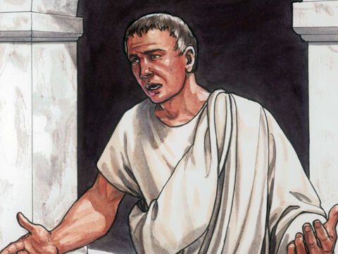
- 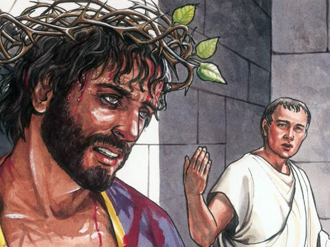
- 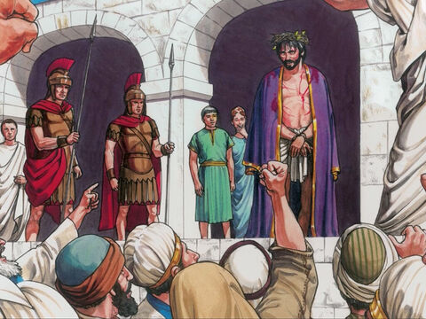
- 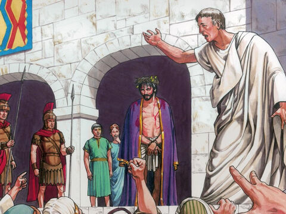
- 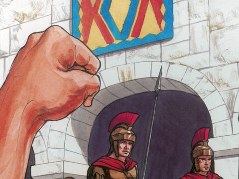
- 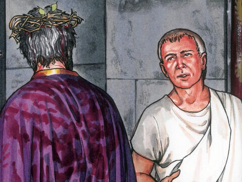
- 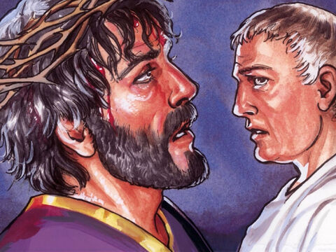

- 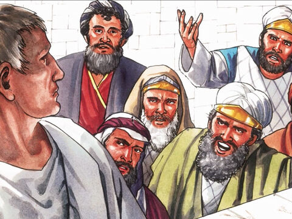
- 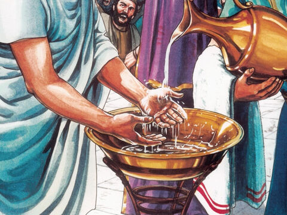
- 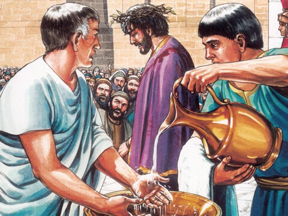
- 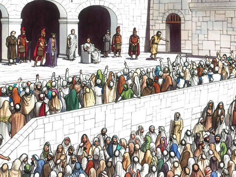